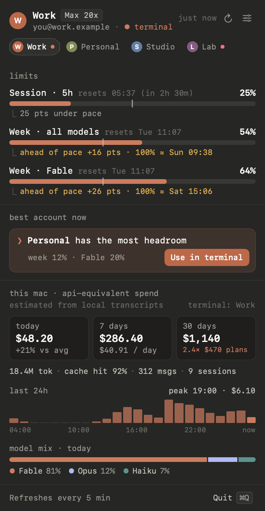

✻ Claude Usage
Every Claude account's limits, pace and spend — one click away in your menu bar.
Unofficial — not affiliated with Anthropic.

what it shows
Limits per account5-hour session, week, and week per model — with a pace marker and when you'd hit 100%.
Which account to useAdd every account with Claude Code's own login and move the terminal to the one with headroom.
Spend on this MacAPI-equivalent cost from your local transcripts: today, 7 and 30 days, models and projects.
install
- Download
ClaudeUsage.zipand unzip it. - Move Claude Usage.app to
/Applications. - First launch (it isn't notarized): open the app once, then click Open Anyway in
System Settings › Privacy & Security. Or, before opening it, run
xattr -dr com.apple.quarantine "/Applications/Claude Usage.app"
requirements
- macOS 14 Sonoma or later
- Claude Code installed and signed in at least once (
claudeon your PATH)
pairs well with
Claude Account Switcher
A Chrome extension that switches your claude.ai account in one click — sign in to the right account
there before you add it here.